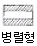

한식조리기능사 (2005-01-30 기출문제)
1과목: 식품위생 및 법규
1. 조리사 또는 영양사 면허의 취소 처분을 받고 그 취소된 날부터 얼마의 기간이 경과되어야 면허를 받을 자격이 있는가?
- 1개월
- 3개월
- 6개월
- 1년
(정답률: 89%)

2. 식품첨가물 공전은 누가 작성 하는가?
- 대통령
- 국무총리
- 식품의약품안전청장
- 한국과학기술원장
(정답률: 95%)
3. 식품위생의 대상이 아닌 것은?
- 식품
- 농기구
- 식품첨가물
- 용기
(정답률: 96%)
4. 다음 중 식품위생법 제2조에서 정의하는 "집단급식소"에 대한 설명으로 옳은 것은?
- 영리를 목적으로 하는 모든 급식소를 일컫는 용어이다.
- 영리를 목적으로 하지 않고 부정기적으로 1개월에 1회씩 음식물을 공급하는 급식소도 포함된다.
- 영리를 목적으로 하지 않고 계속적으로 상시 1회 50인이상에게 식사를 제공하는 급식소를 말한다.
- 영리를 목적으로 하지 않고 계속적으로 불특정 다수인에게 음식물을 공급하는 급식소를 말한다.
(정답률: 83%)
5. 영업허가를 받아야 할 업종이 아닌 것은?
- 식품첨가물제조업
- 유흥주점영업
- 단란주점영업
- 일반음식점영업
(정답률: 69%)
6. 유해감미료에 속하는 것은?
- 둘신
- 솔비톨
- 자일리톨
- 아스파탐
(정답률: 72%)
7. 햄, 소시지, 통조림 식품에 의해서 발생할 수 있는 보툴리누스 식중독의 가장 특징적인 증상은?
- 신경마비
- 심한 설사
- 복통
- 고열
(정답률: 68%)
8. 식품과 해당 독성분의 연결이 잘못된 것은?
- 복어 - tetrodotoxin(테트로도톡신)
- 조개류 - saxitoxin(삭시톡신)
- 감자 - solanine(솔라닌)
- 독버섯 - venerupin(베네루핀)
(정답률: 91%)
9. 항히스타민제 복용으로 쉽게 치료되는 식중독은?
- 살모넬라 식중독
- 알레르기성 식중독
- 병원성대장균 식중독
- 장염 비브리오(Vibrio) 식중독
(정답률: 69%)
10. 식품의 품질저하에 관여하는 미생물의 생육에 영향을 주는 인자가 아닌 것은?
- 수소이온농도(pH)
- 산소의 유무
- 영양소
- 기생충
(정답률: 75%)
11. 엔테로톡신이 원인이 되는 식중독은?
- 살모넬라 식중독
- 장염 비브리오 식중독
- 병원성 대장균 식중독
- 포도상구균 식중독
(정답률: 73%)
12. 황변미 중독을 일으키는 오염 미생물은?
- 곰팡이
- 효모
- 세균
- 기생충
(정답률: 81%)
13. 곰팡이와 같이 산소가 있어야 생육이 가능한 미생물을 무엇이라고 하는가?
- 혐기성균
- 호기성균
- 저온성균
- 통성혐기성균
(정답률: 69%)
14. 음식물의 부패여부를 진단하는 초기 관능검사 항목과 관련이 적은 것은?
- 냄새
- 변색
- 점성
- 무게
(정답률: 85%)
15. 고시폴(Gossypol) 중독을 일으키는 중요한 요인은?
- 피마자씨 기름의 불충분한 정제
- 목화씨 기름의 불충분한 정제
- 피마자씨 기름의 산패
- 목화씨 기름의 산패
(정답률: 57%)
2과목: 식품학
16. 다음의 식품가공 시 단백질 변성에 의한 응고작용에 해당되지 않는 것은?
- 치즈 가공
- 두부 제조
- 달걀 삶기
- 딸기잼 제조
(정답률: 79%)
17. 과일 잼 등의 젤화에 관계하는 3요소가 아닌 것은?
- 알칼리
- 펙틴
- 설탕
- 산
(정답률: 62%)
18. 다음 식품 성분 중 지방질은?
- 프로라민(Prolamin)
- 글리코겐(Glycogen)
- 카라기난(Carrageenan)
- 레시틴(Lecithin)
(정답률: 48%)
19. 단맛을 가지고 있어 감미료로도 사용되며 물에도 쉽게 용해되는 것은?
- 한천
- 펙틴
- 과당
- 전분
(정답률: 73%)
20. 유지의 산패 정도를 측정하는 방법에 속하지 않는 것은?
- 과산화물 값
- 오븐 시험
- 아세틸 값
- TBA(thiobarbituric acid) 시험
(정답률: 32%)
21. 식품의 분류 중 토마토는 어디에 해당되는가?
- 인과류
- 과채류
- 장과류
- 핵과류
(정답률: 91%)
22. 식품 중 존재하는 수분활성에 대한 설명이 잘못된 것은?
- 식품에 오염된 미생물의 활동에 실제로 영향을 주어문제가 되는 수분량은 식품 중 전체 수분함량이다.
- 건조된 쌀에 존재하는 수분 함량은 쌀이 있는 환경조건에 따라 항상 변한다.
- 식품의 수분활성(Aw)은 대기 중의 상대습도까지 고려하여 수분함량을 표시한 것이다.
- 식품의 수분활성은 식품에 함유된 용질의 농도와 종류에 따라 달라진다.
(정답률: 40%)
23. 현미의 주성분은?
- 당질
- 지방
- 단백질
- 비타민
(정답률: 63%)
24. 다음 성분 중 생선묵의 점탄성을 부여하기 위해 첨가하는 물질은?
- 소금
- 전분
- 설탕
- 술
(정답률: 62%)
25. 다음 식품에 대한 설명이 잘못된 것은?
- 한천-다시마를 삶아서 그 액을 냉각시켜 젤리 모양으로 응고시킨 후 건조하여 제조한다.
- 겨자유(mustard oil)-흑겨자 분말에 효소를 처리하여 가수분해시킨 상징액을 증류하여 제조한다.
- 고추냉이 가루-고추냉이 무를 엷게 썰어 60℃ 이하에서 건조·분말로 하여 전분, 색소, 향료, 겨자가루를 첨가하여 제조한다.
- 곤약-토란과 식물인 곤약의 뿌리를 건조시켜 분쇄한 가루에 물을 넣고 삶은 후 석회유를 넣어 젤화시켜 제조한다.
(정답률: 56%)
26. 수용성 비타민의 결핍증이 잘못된 것은?
- 비타민 B1 - 피로, 권태, 식욕부진, 신경염
- 비타민 B12 - 악성빈혈, 간장질환
- 비타민 C - 괴혈병, 잇몸출혈, 저항력 약화
- 비타민 P - 피부염, 습진, 기관지염
(정답률: 50%)
27. 빵 제조시 설탕을 사용하는 주 적과 가장 거리가 먼 것은?
- 곰팡이의 발육을 억제하기 위해서이다.
- 단맛을 주기 위해서이다.
- 표면의 갈색화에 도움을 준다.
- 효모의 성장을 촉진시키기 위해서이다.
(정답률: 64%)
28. 유지의 자동산화에 대한 내용으로 맞는 것은?
- 유지의 자동산화의 직접적인 원인물질은 산소이다.
- 유지의 불포화지방산은 산화되기 어렵다.
- 유지분자에 자외선을 조사하면 산화가 억제된다.
- 지질가수분해효소는 자동산화를 느리게 한다.
(정답률: 53%)
29. 동식물체에 자외선을 쪼이면 활성화되는 비타민은?
- 비타민A
- 비타민D
- 비타민E
- 비타민K
(정답률: 84%)
30. 생선의 비린내 성분은?
- 메탄올(methanol)
- 인돌(indol)
- 스카톨(skatol)
- 트리메틸아민(trimethylamine)
(정답률: 88%)
3과목: 조리이론과 원가계산
31. 스파게티나 국수에 이용되는 문어나 오징어 먹물의 색소는?
- 타우린
- 멜라닌
- 미오글로빈
- 히스타민
(정답률: 61%)
32. 당용액으로 만든 결정형 캔디는?
- 퐁당(fondant)
- 캐러멜(caramel)
- 마쉬멜로우(marshmellow)
- 젤리(jelly)
(정답률: 73%)
33. 다음 식품의 감별에 대한 설명으로 틀린 것은?
- 생선은 눈이 불룩하고 비늘은 광택이 있고, 단단히 부착된 것이 좋다.
- 패류는 겨울철이 산란시기로 맛이 없고, 봄철이 더 좋다.
- 당근은 둥글고 살찐 것으로 마디가 없고 잘랐을 때 단단한 심이 없는 것이 좋다.
- 오이는 색이 좋고 굵기가 고르며 만졌을 때 가시가 있으며 무거운 것이 좋다.
(정답률: 73%)
34. 근육 조직 중 주로 식용으로 이용되는 근육은?
- 심근
- 골격근
- 평활근
- 불수의근
(정답률: 63%)
35. 하루에 필요한 열량을 3식으로 배분할 때 그 비율은 무엇을 근거로 하는가?
- 생활시간 조사
- 영양권장량
- 피급식자의 나이
- 피급식자의 식습관
(정답률: 31%)
36. 대규모의 주방에서 조리설비의 배치로 가장 이상적인 것은?

(정답률: 55%)
37. 소화된 영양소는 주로 어느 곳에서 흡수되는가?
- 위장
- 소장
- 대장
- 간장
(정답률: 59%)
38. 다음 유지류 중 필수지방산이 가장 많이 함유되어 있는 것은?
- 쇠기름
- 콩기름
- 버터
- 쇼트닝
(정답률: 63%)
39. 우유에 많이 함유된 단백질로 치즈의 원료가 되는 단백질은?
- 카제인(casein)
- 알부민(albumin)
- 글로불린(globulin)
- 미오신(myosin)
(정답률: 77%)
40. 단팥죽을 만들 때 단맛을 강하게 하기 위하여 설탕과 함께 소량 넣어 주는 것은?
- 소금
- 식초
- 소다
- 계피가루
(정답률: 91%)
41. 대두의 성분 중 거품을 내며 용혈작용을 하는 것은?
- 사포닌
- 레닌
- 아비딘
- 청산배당체
(정답률: 67%)
42. 생선을 조리할 때 생선의 냄새를 없애는 데 도움이 되는 재료로서 가장 거리가 먼 것은?
- 식초
- 우유
- 설탕
- 된장
(정답률: 79%)
43. 펩신(pepsin)에 의해 소화되지 않는 것은?
- 전분
- 알부민
- 글로불린
- 미오신
(정답률: 48%)
44. 냉동식품을 공기나 액체 중에서 해동할 때 주의사항으로 틀린 것은?
- 해동매체의 온도는 10 ~ 15도가 가장 적당하다.
- 해동매체의 양을 많게 하고 충분히 유통시킨다.
- 공기중인 경우에는 습도를 높게 한다.
- 분할할 수 있는 소단위로 만들어 해동매체에 접하는 면적을 넓게 한다.
(정답률: 30%)
45. 다음은 원가계산의 절차들이다. 이들 중 옳은 것은?
- 요소별원가계산→부문별원가계산→제품별원가계산
- 요소별원가계산→제품별원가계산→부문별원가계산
- 부문별원가계산→요소별원가계산→제품별원가계산
- 제품별원가계산→부문별원가계산→요소별원가계산
(정답률: 53%)
46. 식품을 물이나 조미액에 담가두는 과정을 담그기(침수)라고 하는데, 그 목적이 아닌 것은?
- 건조식품의 수분흡수
- 식품의 불필요한 성분 용출
- 식품의 변색방지
- 식품의 영양소 손실 방지
(정답률: 49%)
47. 다음의 조리과정 중 비타민 C의 손실을 최소화하는 방법이 아닌 것은?
- 사과를 블렌더로 갈 때 소금을 소량 첨가한다.
- 깍두기에 당근도 같이 첨가한다.
- 감자는 삶는 방법보다 찌거나 볶는 방법을 선택한다.
- 무생채에 식초를 첨가한다.
(정답률: 62%)
48. 전자렌지 오븐(microwave oven)에서의 조리 원리는?
- 복사에 의하여
- 전도에 의하여
- 대류에 의하여
- 초단파에 의하여
(정답률: 81%)
49. 원가 구성 요소 중 가장 높은 비율을 차지하는 식재료비의 비율은 전체 매출액 중 식재료비가 차지하는 비율로 계산한다. 1일 총 매출액이 1,200,000원, 식재료비가 780,000원인 경우의 식재료비 비율은?
- 55%
- 60%
- 65%
- 70%
(정답률: 63%)
50. 경영형태별로 단체급식을 분류할 때 직영방식의 장점은?
- 인건비의 증가를 가져 온다.
- 서비스가 잘 되지 않는다.
- 영양관리와 위생관리가 철저하다.
- 이윤을 남기기 위해 영양관리에 문제가 발생할 수 있다.
(정답률: 81%)
4과목: 공중보건
51. 대기오염을 일으키는 주된 원인은?
- 고기압 일 때
- 저기압 일 때
- 바람이 불지 않을 때
- 기온역전 일 때
(정답률: 75%)
52. 건강의 3요소와 거리가 먼 것은?
- 환경
- 개인의 생활습관
- 유전
- 피부색
(정답률: 80%)
53. 피부를 통하여 감염될 수 있는 기생충은?
- 요충
- 십이지장충
- 회충
- 폐흡충
(정답률: 56%)
54. 다음 작용들은 미생물에 작용하는 강도의 순으로 표시한 것이다. 맞는 것은?
- 멸균＞소독＞방부
- 소독＞방부＞멸균
- 방부＞멸균＞소독
- 소독＞멸균＞방부
(정답률: 67%)
55. 중금속 오염과 관계된 공해 질병은?
- 잠함병
- 결핵
- 이타이이타이병
- 세균성 식중독
(정답률: 85%)
56. 자외선의 작용과 가장 거리가 먼 것은?
- 구루병의 예방, 치료 작용
- 혈압강하작용
- 피부암 유발
- 안구진탕증 유발
(정답률: 54%)
57. 전염병 예방방법 중 전염원에 대한 대책에 속하는 것은?
- 음료수의 소독
- 식품 취급자의 손 청결
- 위생해충의 구제
- 환자, 보균자의 색출
(정답률: 49%)
58. 중간숙주와 관계없이 감염이 가능한 기생충은?
- 아니사키스충
- 회충
- 폐흡충
- 간흡충
(정답률: 65%)
59. 채소 및 과일에 가장 적당한 소독방법은?
- 일광소독
- 열탕소독
- 알콜소독
- 클로르칼키소독
(정답률: 62%)
60. 다음 중 병원체가 세균인 것은?
- 유행성 간염
- 폴리오
- 말라리아
- 장티푸스
(정답률: 44%)
한국에서는 조리사 또는 영양사 면허의 취소 처분을 받은 경우, 해당 면허를 다시 받기 위해서는 1년의 기간이 경과해야 합니다. 이는 관련 법령인 '식품위생법 시행규칙' 제24조에 규정되어 있습니다. 따라서, 1년 이내에는 재신청이 불가능하며, 1년 이후에 재신청이 가능합니다.